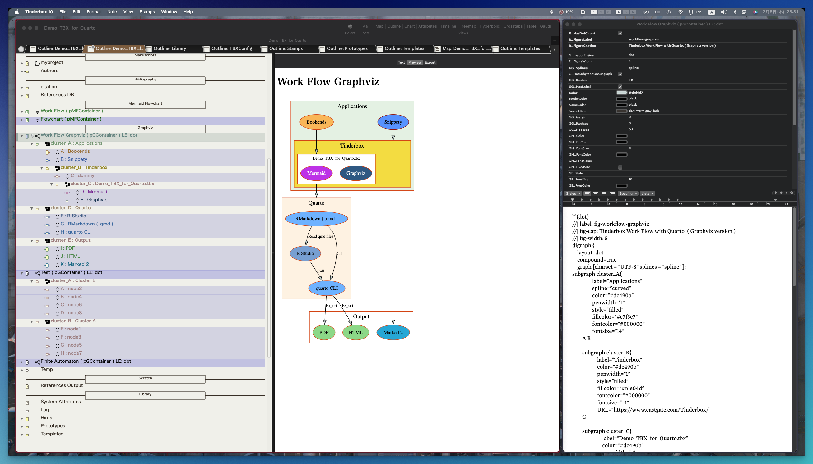

13 Graphviz β version (optional)
13.1 How to use
- You make a container noto for the graph and set pGContainer.
- You make notes ( pGNode) and links. You can’t make links to cluster (subgraph).
- You choose a direction for drawing like TB or LR.($GG_Rankdir)
- You can choose a Layout Engin like
dot,neato,fdpand so on. - Change attributes for Graphviz.
- Attributes starting with
GG_are for the Subgraph ( cluster ) options - Attributes starting with
GN_are for the Note options - Attributes starting with
GE_are for the Edge options
- Attributes starting with
- Run the stamp (
Graphviz: Make a Dot graph). - Prototypes of container notes have a child note change from pGNode to pGContainer automatically by the stamp.
- The note (pGContainer) has the code for Graphviz.

13.2 Example
Figure 2 and Figure 13.1 .